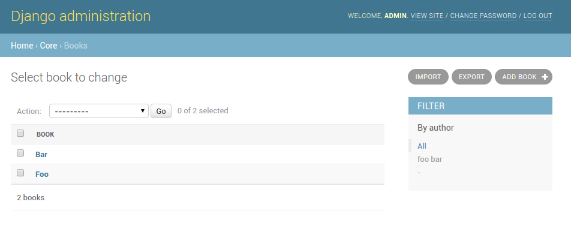

Django インポート/エクスポート¶
django-import-exportは、Djangoのアプリケーションとライブラリであり、adminと統合してデータのインポートとエクスポートが可能になります。
特徴:
- 複数のフォーマット(Excel、CSV、JSONなど、 tablib がサポートするすべてのフォーマット)をサポート
- インポート用のadmin統合
- インポートの変更プレビュー
- エクスポート用のadmin統合
- adminフィルタを尊重するエクスポートデータ
インポートとエクスポートを含む変更されたビューのスクリーンショット。
ユーザーガイド
- インストールと設定
- 入門
- インポートデータのワークフロー
- Changelog
- 0.5.2 (unreleased)
- 0.5.1 (2016-09-29)
- 0.5.0 (2016-09-01)
- 0.4.5 (2016-04-06)
- 0.4.4 (2016-03-22)
- 0.4.3 (2016-03-08)
- 0.4.2 (2015-12-18)
- 0.4.1 (2015-12-11)
- 0.4.0 (2015-12-02)
- 0.3.1 (2015-11-20)
- 0.3 (2015-11-20)
- 0.2.9 (2015-11-12)
- 0.2.8 (2015-07-29)
- 0.2.7 (2015-05-04)
- 0.2.6 (2014-10-09)
- 0.2.5 (2014-10-04)
- 0.2.4 (2014-09-18)
- 0.2.3 (2014-07-01)
- 0.2.2 (2014-04-18)
- 0.2.1 (2014-02-20)
- 0.2.0 (2014-01-30)
- 0.1.6 (2014-01-21)
- 0.1.5 (2013-11-29)
- 0.1.4
- 0.1.3
- 0.1.2
- 0.1.1
- 0.1.0